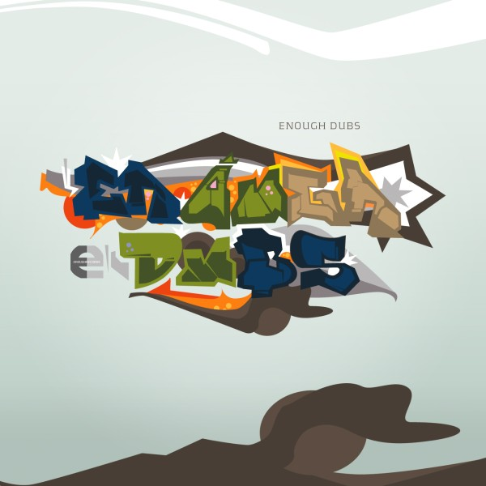

download all tracks
1.
DZ - Galileo Blues
6:29
2.
Wadadda ft. FS Dan - Moralny Hazard
3:56
3.
Takomo - Mobula
4:06
4.
Desmond Denker - Dust Condition
3:39
5.
Discreat - Distanz
5:36
6.
Takomo - Bombman
5:13
7.
Dipswitch - Pressed Current
4:17
8.
2krazy - Megamix
21:45
enoughrecords
2008
creative commons by-nc-nd 2.5